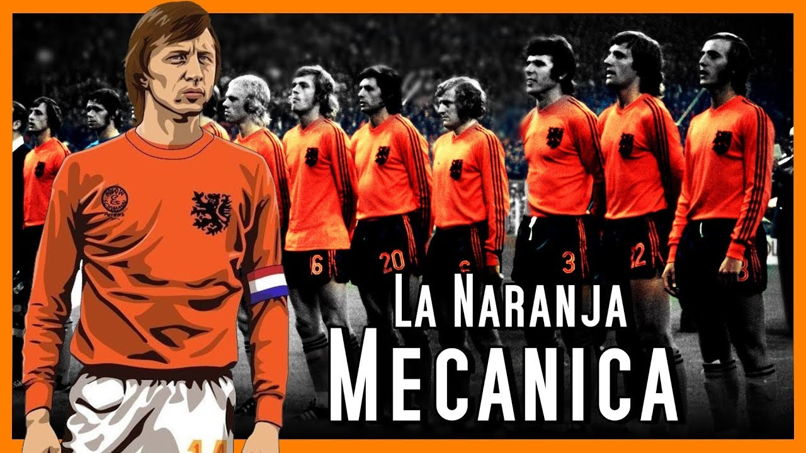

La generación de la Naranja Mecánica

La historia de la Naranja Mecánica representa una de las épocas más revolucionarias de la historia del fútbol. Su momento más importante se desarrolló durante la década de 1970, cuando la selección de los Países Bajos sorprendió al mundo con una manera diferente de entender el juego. Bajo la dirección de Rinus Michels, el equipo desarrolló un estilo basado en el movimiento constante, la presión, la posesión del balón y la libertad de sus jugadores para ocupar diferentes posiciones.
Aquella generación estuvo liderada por figuras extraordinarias como Johan Cruyff, Johan Neeskens, Ruud Krol, Johnny Rep, Wim Suurbier y Rob Rensenbrink. Sin embargo, Cruyff fue la gran figura y el principal símbolo de aquel equipo. Su inteligencia, técnica y capacidad para interpretar el juego lo convirtieron en uno de los futbolistas más importantes de la historia y en el rostro de una selección que cambió la manera de jugar al fútbol.
La Naranja Mecánica alcanzó su máximo nivel en el Mundial de Alemania 1974. Los Países Bajos llegaron a la competición mostrando un fútbol espectacular y derrotaron a selecciones como Argentina, Brasil y Uruguay. En la segunda fase, el equipo demostró una enorme superioridad y consiguió llegar a la final después de marcar numerosos goles y mantener una gran solidez colectiva.

En la gran final del Mundial de 1974, disputada en Múnich, los Países Bajos se enfrentaron a la selección anfitriona, Alemania Federal. El equipo neerlandés comenzó ganando, pero Alemania logró remontar y terminó venciendo por 2-1. A pesar de perder la final, aquella selección quedó en la historia por la forma en que revolucionó el fútbol y por haber llevado su estilo hasta el escenario más importante del mundo.
La importancia de esta generación no se limitó a sus resultados. El entrenador Rinus Michels desarrolló una idea conocida como “Fútbol Total”, en la que los jugadores podían intercambiar posiciones y participar constantemente en el juego. Esta propuesta convirtió al equipo neerlandés en uno de los conjuntos más influyentes de todos los tiempos y tuvo una enorme influencia sobre generaciones posteriores de entrenadores y futbolistas.
Aunque la Naranja Mecánica no consiguió conquistar la Copa del Mundo, su legado fue mucho más grande que un título. Johan Cruyff y sus compañeros demostraron que también se puede hacer historia transformando la manera de jugar. Su fútbol ofensivo, dinámico y colectivo convirtió a aquella selección en un símbolo de creatividad y revolución dentro del deporte.
La Naranja Mecánica dejó una enseñanza que permanece hasta nuestros días: un equipo puede convertirse en leyenda no solamente por los trofeos que levanta, sino también por las ideas que deja detrás. Aquella generación no ganó el Mundial, pero cambió la historia del fútbol y demostró que la belleza, la inteligencia y la innovación también pueden convertirse en una forma de grandeza.